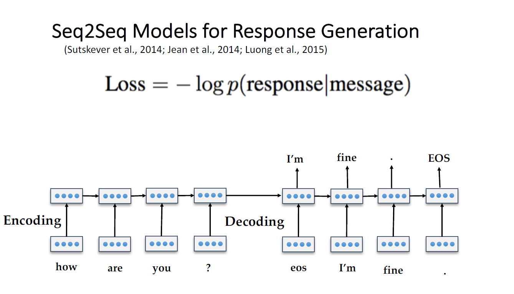
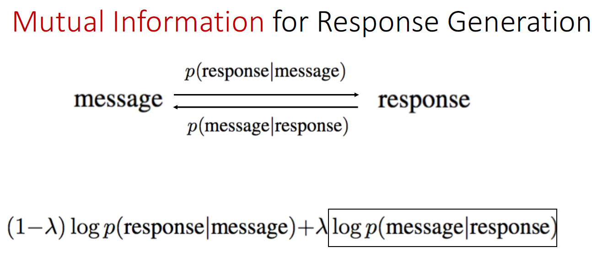
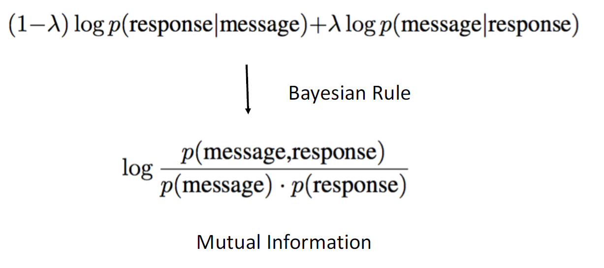
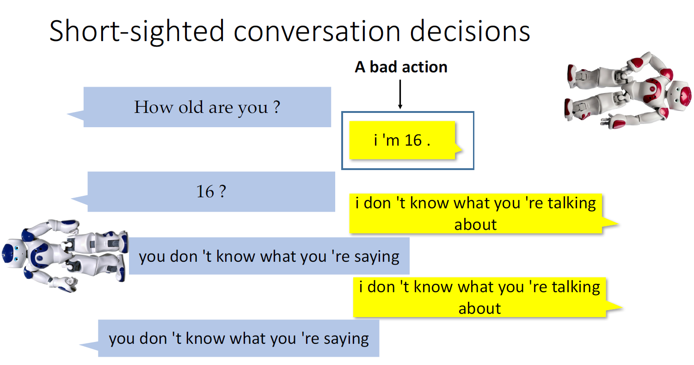
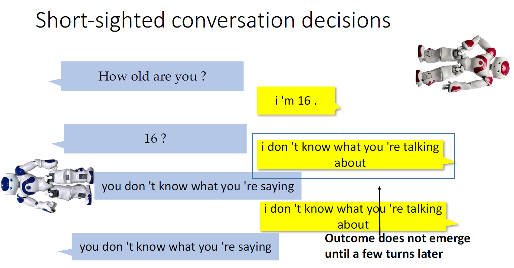
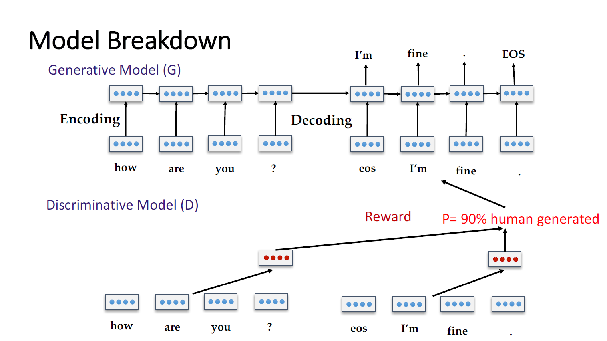

title: 斯坦福博士李纪为：如何打造对话机器人 直播笔记（太长不看版）
catalog: true
tags:
李博士在直播中主要针对对话系统的4个难点进行了探讨：
Seq2Seq模型最早用于神经机器翻译，也经常被用于对话系统，见下图。

论文地址
Seq2Seq模型存在一些问题，比如：总是产生诸如”我不知道“等无意义的回答，因为此回答在训练集中非常常见。
解决的第一种思路也许是通过规则或者其他手段不允许产生此类回答，但是类似”我不知道“的回答有很多，没办法消除干净。
解决的第二种思路是可以利用互信息(Mutual Information)在训练的时候过滤没有意义的答复。一般来说，给出问题，我们可以给出一个相应的答案；反过来说，给出有意义的答案，我们也可以大致推得问题。所以，在损失函数中通过加入后验概率$\log p(message|responce)$即可。


论文：A Diversity-Promoting Objective Function for Neural Conversation Models
因为训练集通常来自于不同的人，所以如果不加处理，即使对于同一个问题，不同的问法可能会得到前后不一致的回答，更别说多轮对话中可能出现的矛盾。所以，保持对话机器人身份等一致性非常重要。
作者提出了persona-based models 用以处理这类问题——将人物信息比如背景、说话方式等抽取成向量表示，结合进Seq2Seq模型中。
论文:A Persona-Based Neural Conversation Model
多轮对话系统设计非常难，主要有以下几个问题：


State：之前对话encoding的输出
Action: 下一句对话
Reward:
主要基于三点
论文：Deep Reinforcement Learning for Dialogue Generation
但是Reward这些特征都是人为设定的，还有许多特征没能被考量。有一个思路是通过人为去判断答复是来自机器还是人（图灵测试），但是这样的代价太昂贵，但是可以考虑用GAN。

论文：Adversarial Learning for Neural Dialogue Generation
三类需要提问的情况：
怎么做：训练一个增强学习系统
论文：LEARNING THROUGH DIALOGUE INTERACTIONS
最后李博士还提到了一篇论文：
Latent Intention Dialogue Models
提出了一个多轮对话的任务型系统模型LIDM